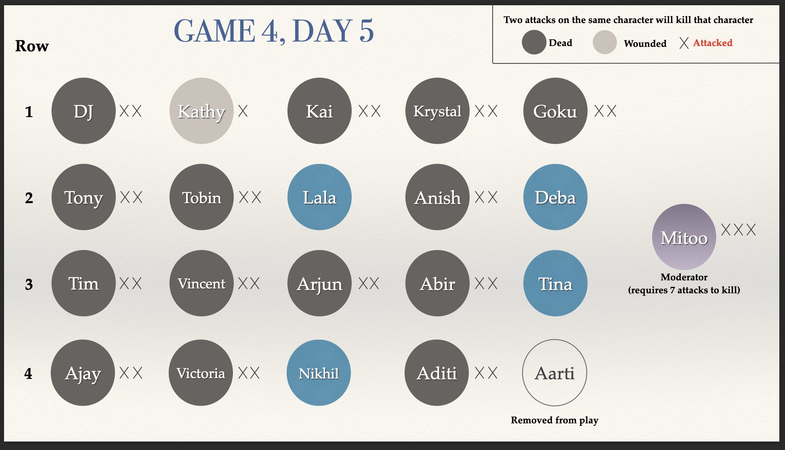

Evil wins with no damage! Next game day in:
Days
Hours
Minutes
Seconds

1 NPC, 20 players: 15 good, 1 serial killer, 4 evil
Important events so far
- 04/14 - Players attacked: Kathy. Players dead: Ajay & Tony. Lala is healed.
- 04/14 - Players attacked: Ajay (x1) & Lala (x1). Players dead: Abir, DJ & Vincent.
- 04/14 - GAME IS SPED UP CAUSE IT IS PRETTY MUCH GG FOR GOOD.
- 04/13 - Players attacked: DJ & Abir. Players dead: Arjun, Krystal, Goku, Victoria, Tobin, Aditi, Anish. From now on, you can submit your actions by 5pm EDT. The next night will be on Wednesday, good luck!!
- 04/11 - Qyburn's brother has successfully prevented one attack on good tonight.
- 04/11 - The Serial Killer exchanged the following information to gain priority attacks. The Scarlet Martyr is not in play and they are not in row #3.
- 04/11 - Day 2 Option: You may give up your ability to attack for the rest of the game in order to be put into a group chat with a random member of your team. Their role is revealed to you. Fake News (if in play) does not affect this information. If you want to take this option, message me some variation of: "I give up my ability to attack for the rest of the game to be introduced to a random member of my team."
- 04/11 - Looks like the Night 1 is starting strong with a quite a bit of bloodshed! Players attacked are Arjun, Aditi, Victoria, Goku, Vincent, Kathy, Krystal. Players who died are Tim and Kai. The moderator was attacked three times.
- 04/08 - Moderator says; The first person to message me with two options, one of which being her correct role, will dodge one attack on them on the second night. Two rules: (1) the time limit to let me know is the end of the first day (this coming Saturday 8pm GMT) and (2) now that she is an observer no one can ask her for her role or any further information about this. This means you need to use what information you have till this point to figure out her role. This option is open to players across all teams.
- 04/07 - Evil has decided to trade information about two evil roles not in play for more information. Two evil roles not in play: Dark phoenix & Death eater.
- 04/07 - An indisputable report reveals that the Scarlet Witch is locked up (not in play) and the judge reveals that the Public Announcer is acquitted (not in play). A potentially drunk police officer tells you that row #1 seems most suspicious (has the most number of evil characters of any row). There is a 50% chance the officer is drunk, and his information is incorrect.
- 04/07 - Game begins!
Characters Publicly Confirmed Not In Play
- Scarlet Witch (evil)
- Dark Phoenix (evil)
- Death Eater (evil)
- Public Announcer (good)
- Scarlet Martyr (good)
Misc. Info
There may be random chaos but these will be announced publicly:
- Save all players from attacks for the night
- Cause random attacks to miss
- Cause attacks to strike random targets
- Cause information to be incorrect
- Etc.
Great game and very well played everyone! Especially evil team!!
Roles:
Lala - Shadow Walker
Tina - Dark Magician
Deba - Evil Role Blocker
Nikhil - Vampire Seeker
Tony - Serial Killer
Arjun - Guardian
Ajay - Pensieve
DJ - Master of Whispers
Goku - Forensic Scientist
Kathy - Legolas
Krystal - Qyburn's Brother
Tim - Tip Line
Tobin - Selector Detector
Anish - Vampire
Victoria - Homunculus
Vincent - Role Blocker
Kai - Necromancer
Abir - Qyburn
Aditi - Vampire Hunter
Aarti (not playing) - Mirror